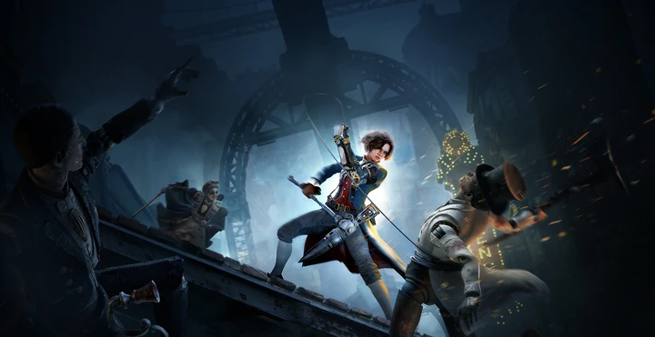

Giangio
Laxasia
Pinóquio
Sophia Monad

| |
||
| Eugénie Giangio Laxasia Pinóquio Sophia Monad |
Lies of P é um RPG de ação jogado em terceira pessoa. o jogador controla o humanóide Pinóquio e viaja a pé pela cidade de Krat, explorando o ambiente e lutando contra vários inimigos biomecânicos. O jogador utiliza um arsenal de armas como espada e machado contra seus inimigos e pode se esquivar e bloquear seus golpes. Pinóquio tem um braço mecânico que pode ser equipado com dispositivos como um gancho para atrair inimigos ou um lança-chamas. O sistema de craft permite criar novas armas através da combinação de tipos já existentes. O jogador também tem a opção de substituir as partes do corpo de Pinóquio, desbloqueando novas habilidades. As decisões que o jogador toma durante certas passagens afetam o curso dos eventos. | |
|  |
||